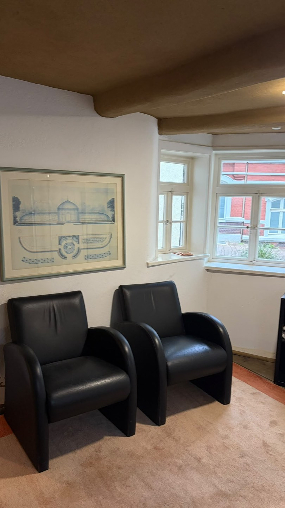
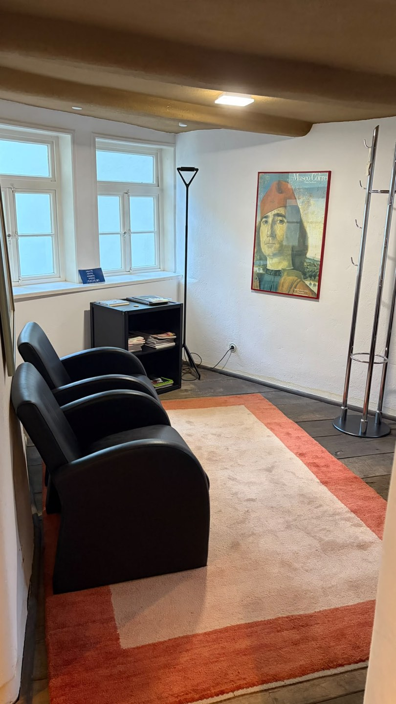
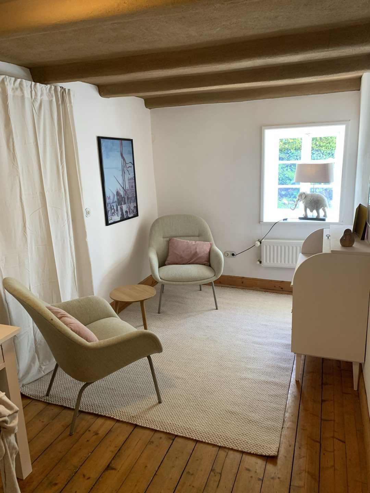
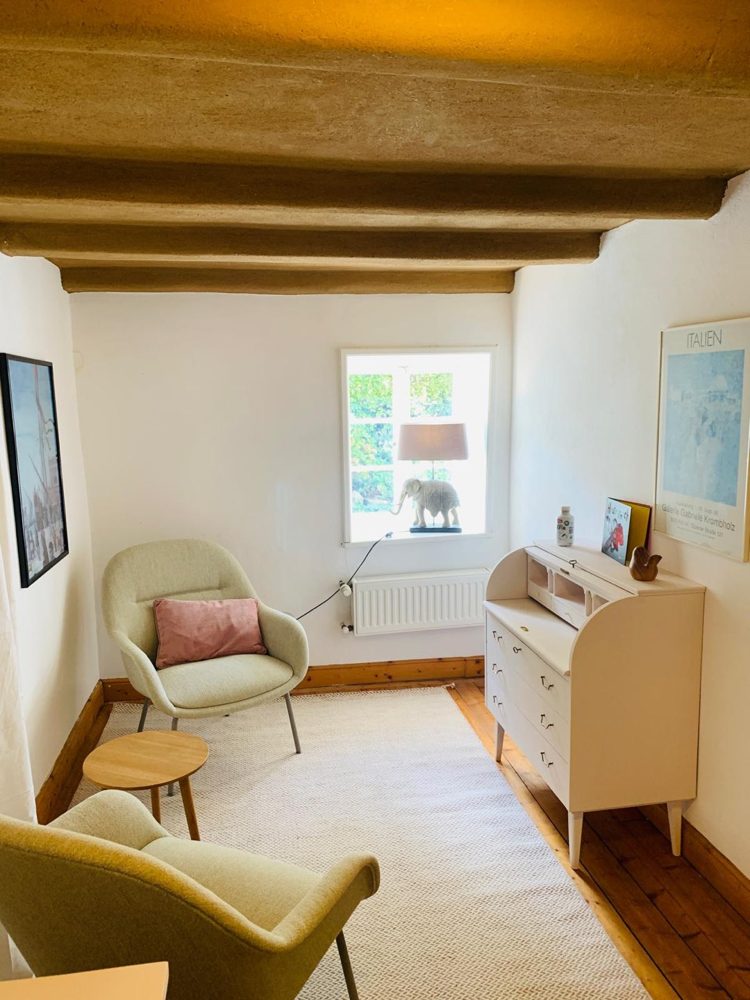

Die Praxis
Ein Haus mit Geschichte, mitten am Salzhof
Unsere Praxis liegt in einem denkmalgeschützten Fachwerkhaus direkt am Salzhof – dem historischen Mittelpunkt der Altstadt von Bad Salzuflen.
Massive Holzbalken, ein Natursteinboden und eine offene Galerie treffen auf weiß verputzte Wände und helle, freundliche Räume: der Charme historischer Bausubstanz verbindet sich mit einer ruhigen, undklinischen Atmosphäre zum Ankommen.

Lage
Der Salzhof – Keimzelle der Stadt
Der Salzhof gilt als der historische Ursprung Bad Salzuflens: Schon zwischen 1036 und 1051 wird an dieser Stelle erstmals eine Salzstätte urkundlich erwähnt. 1488 erhielt der Ort Stadtrechte, seit 1818 entwickelte er sich zum Mineral- und Solheilbad. Die Altstadt rund um den Salzhof ist bis heute geprägt von historischen Fachwerkhäusern mit kunstvollen Giebeln – mittendrin unser Haus in der Schießhofstraße 1.
Von hier aus sind der Kurpark und alle Kureinrichtungen fußläufig erreichbar; auch mit öffentlichen Verkehrsmitteln ist die Praxis gut zu erreichen. Alle Details zu Anfahrt und Parken finden Sie auf der Kontaktseite.
Ankommen
Ein Foyer, das schon beim Eintreten wirkt
Eine zweigeschossige Diele mit freiliegender Holzbalkendecke, grob behauenem Natursteinboden und einer offenen Holztreppe zur Galerie im Obergeschoss – der erste Eindruck unseres Hauses ist geprägt von historischer Substanz und viel Licht.

Vor dem Termin
Ein ruhiger Platz zum Warten
In unserem Warteraum können Sie die Minuten vor Ihrem Termin in Ruhe ausklingen lassen – mit bequemen Sitzgelegenheiten, Tageslicht und der gleichen warmen Atmosphäre wie im restlichen Haus.


Zur Ruhe kommen
Räume für das therapeutische Gespräch
Unter der Dachschräge, mit sichtbaren Holzbalken, hellem Teppich und Dielenboden: unsere Behandlungsräume sind bewusst warm und wohnlich gestaltet – kein steriles Sprechzimmer, sondern ein Ort zum Ankommen.
Gedämpftes Salbeigrün und zarte Rosatöne der Sitzmöbel, dezente persönliche Deko und viel Tageslicht schaffen eine ruhige Atmosphäre für offene Gespräche.


Neugierig geworden?
Lernen Sie unser Team kennen oder nehmen Sie direkt Kontakt zu uns auf – wir freuen uns auf Sie.